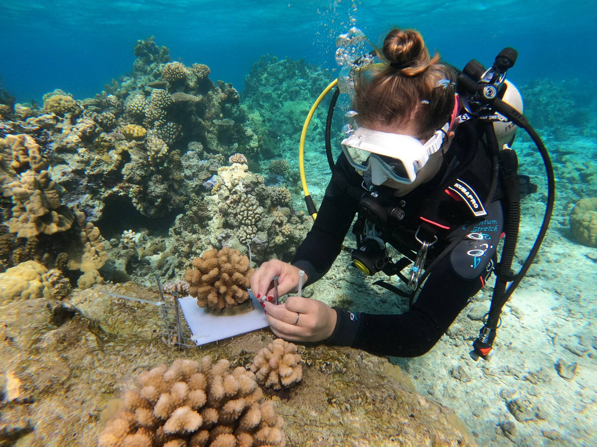
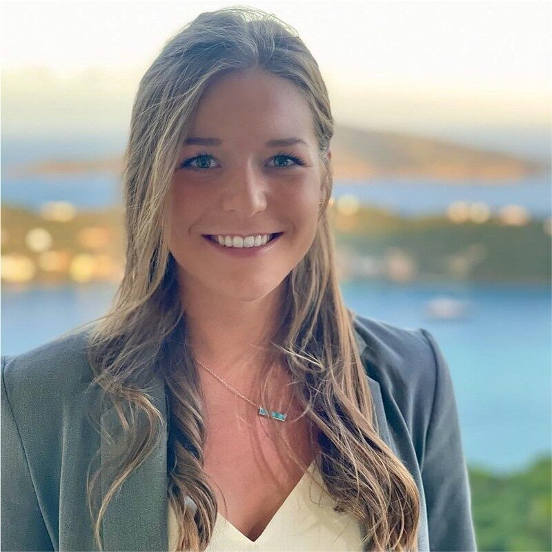
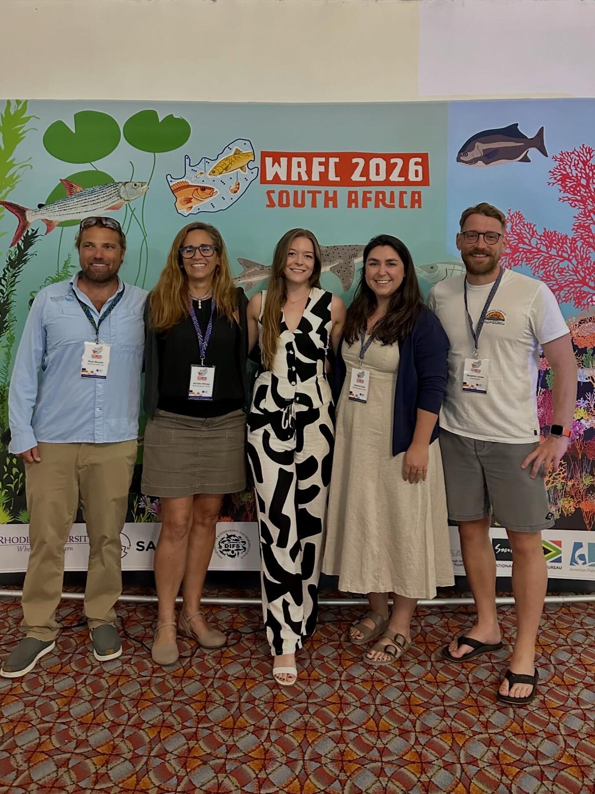
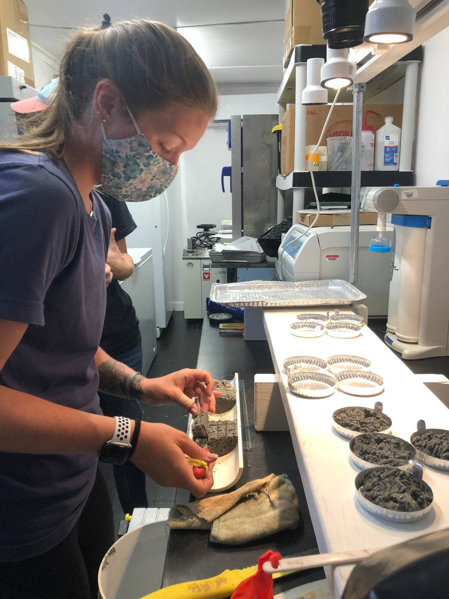
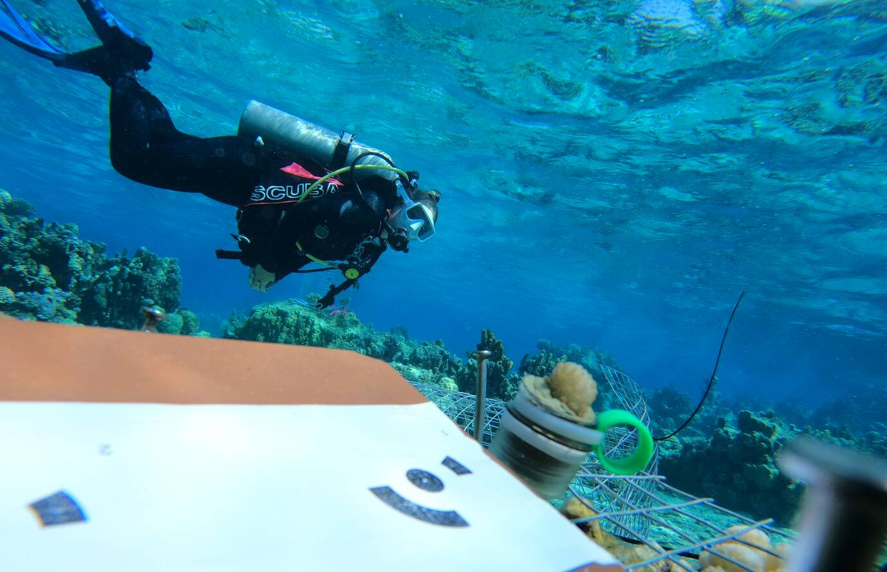
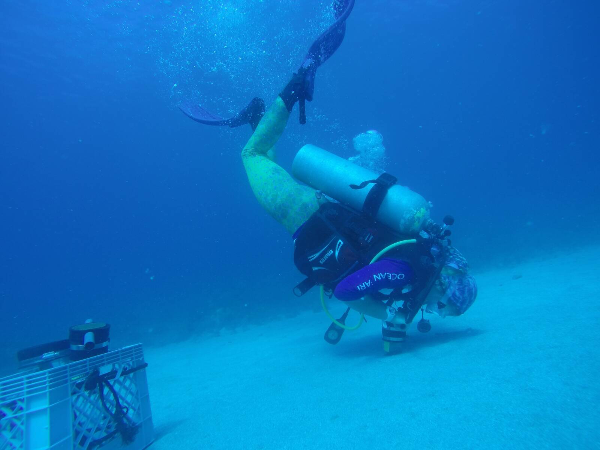

01
Coral reef ecology
Using field experiments, remote sensing, and long-term monitoring data to understand coral population dynamics and responses to marine heatwaves.
About

I am an ecologist at the University of Georgia’s Odum School of Ecology. My research asks how organisms perceive, learn, and respond to environmental change—and how those responses scale to populations and communities.
My work combines behavioral experiments, field ecology, and long-term monitoring data across freshwater, marine, and human-modified ecosystems.
Education
Ph.D. in Ecology In progress
University of Georgia · Odum School of Ecology
M.S. in Marine and Environmental Science
University of the Virgin Islands
B.S. in Animal Science
University of Arkansas
Research

01
Using field experiments, remote sensing, and long-term monitoring data to understand coral population dynamics and responses to marine heatwaves.

02
Testing how rising temperatures affect learning, behavioral variation, and predator–prey interactions in aquatic organisms.

03
Measuring carbon sequestration in sediments beneath the invasive seagrass Halophila stipulacea across an extreme water-depth gradient in the U.S. Virgin Islands.

04
Connecting ecological evidence to conservation practice in marine ecosystems and emerging agrivoltaic landscapes.
In the field

Publications
Impacts of the 2023 Marine Heatwave in the Florida Keys: Detection and Analysis of a Mass Coral Bleaching Event Using Spaceborne Remote Sensing Imagery
Environmental Science & Technology, 59(29), 15227–15235.
Nocturnal Cleaning Interactions Between the Giant Moray (Gymnothorax javanicus) and the Clear Cleaner Shrimp (Urocaridella antonbruunii)
Ecology and Evolution, 14(12), e70589.
Sediment carbon storage in subtidal beds of the invasive seagrass Halophila stipulacea along an extreme water depth gradient, St. Thomas, US Virgin Islands
Aquatic Botany, 194, 103778.
Impact of invasive seagrass Halophila stipulacea on life history characteristics of juvenile yellowtail snapper (Ocyurus chrysurus)
Bulletin of Marine Science.
Diversity and Disease: The Effects of Coral Diversity on Prevalence and Impacts of Stony Coral Tissue Loss Disease in Saint Thomas, U.S. Virgin Islands
Frontiers in Marine Science, 8, 682688.
Get in touch